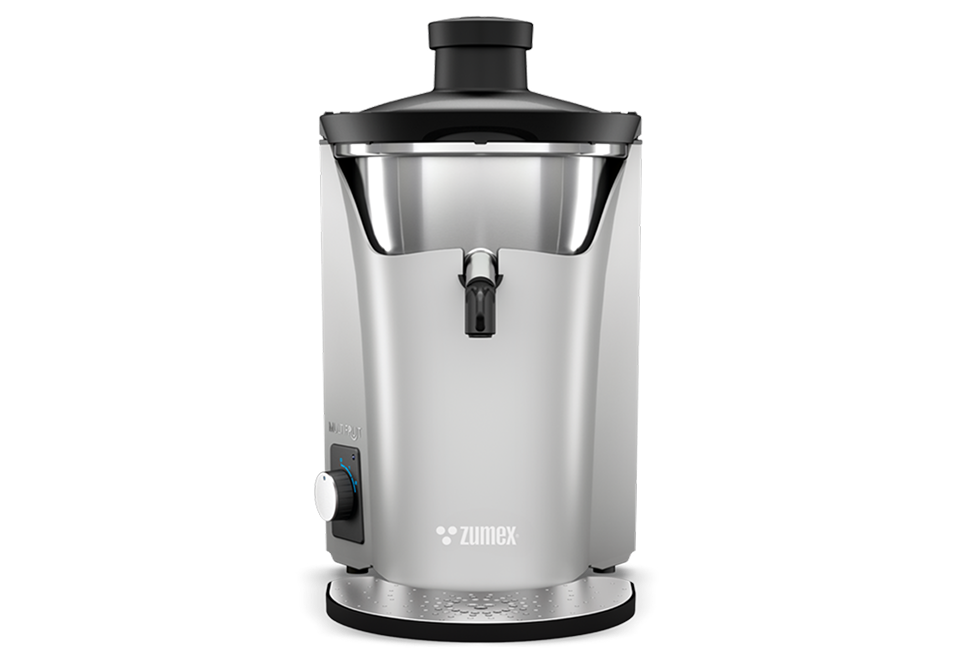
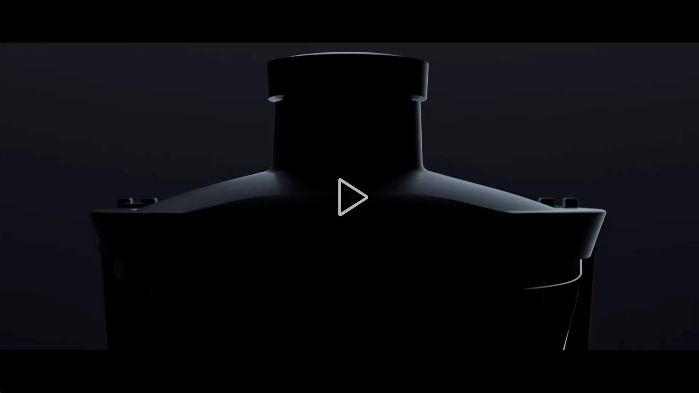

Multifruit
Multifruit
Svoboda kombinovat.
Odšťavňovač pro ovoce i zeleninu. Připravujte vlastní kombinace chutí v juice barech, kavárnách a profesionálních kuchyních.
Poptat tento produktCenu a dostupnost vám potvrdíme podle konfigurace.
120 kg/hZpracování
1,8 l/minVýkon
2 rychlostiNastavení
Navržen pro váš provoz.
Multifruit rozšiřuje nabídku o šťávy z ovoce i zeleniny: od jablek a mrkve po okurku, ananas nebo zázvor. Odstředivý systém se dvěma rychlostmi je vhodný pro juice bary, kavárny a kuchyně, které chtějí kombinovat různé suroviny.
Bezkartáčový motor, titanový strouhací kotouč a optimalizovaný filtr tvoří základ průběžného odšťavňování. Velká nádoba na odpad pojme 13 litrů; alternativně lze řešit odvod pod pracovní desku.
Odpadní nádoba s objemem 13 litrů.
Černé, stříbrné a třešňové provedení.


VYBERTE SI PROVEDENÍ
Jedna řada. Vaše konfigurace.
Multifruit
Volte rychlost a přípravu surovin podle návodu. Výsledný průtok závisí na jejich druhu a zralosti. Pro rychlé čištění je důležitý pravidelný přístup k filtru a nádobě na dužinu.
Poptat variantuFotografie jsou ilustrační pro danou řadu. Výbava a technické parametry se mohou lišit podle varianty.
PODROBNĚ A PŘEHLEDNĚ
Technické parametry.
- Zpracování suroviny
- 120 kg/h
- Orientační průtok
- 1,8 l/min
- Rychlosti
- 3 500 / 4 500 ot./min
- Průměr vstupu
- Do 75 mm
- Rozměry (š × h × v)
- 290 × 500 × 510 mm
- Hmotnost
- 15 kg
- Příkon
- 870 W
- Odpadní nádoba
- 13 l
- Krytí
- IPX1
- Barvy
- Cherry / Black / Silver
Údaje výrobce pro uvedené provedení. Výkon závisí na surovině a konfiguraci. Zdroj: Zumex ↗
Co zvážit při výběru
Volte rychlost a přípravu surovin podle návodu. Výsledný průtok závisí na jejich druhu a zralosti. Pro rychlé čištění je důležitý pravidelný přístup k filtru a nádobě na dužinu.
Probrat vhodnou konfiguraci ↗VŠE PODSTATNÉ PO RUCE
Technické podklady.
Podrobnosti, dostupné příslušenství a materiály výrobce.